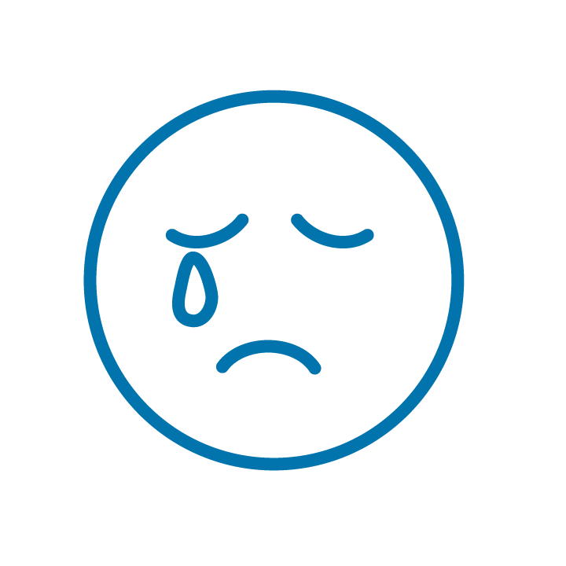

Módulo 1 | Aula 2 Reflexões sobre a salutogênese no contexto da Atenção Primária à Saúde
O conceito do senso de coerência (SCO)
O Senso de Coerência (SCO) consiste em uma orientação global na perspectiva de ver a vida estruturada, manejável (fazer sua autogestão) e com significado emocional. Trata-se de uma forma individual de pensar, sentir e agir com uma autoconfiança que leva as pessoas a se identificarem, beneficiarem, utilizarem e reutilizarem os recursos disponíveis que já possuem em suas vidas. O SCO é composto por três elementos. Vamos conhecê-los?
Elemento Cognitivo
Refere-se à capacidade de compreender, de conferir significado aos estímulos, mesmo quando eles se apresentarem em grandes dimensões. Diz respeito a uma capacidade concreta de julgar a vida e consiste na própria definição do senso de coerência. Quando os estímulos são compreendidos enquanto experiências que podem ser superadas, estes eventos passam a ser considerados como desafios a serem enfrentados. Nesta direção, mesmo episódios muito difíceis de serem superados podem ser considerados suportáveis.
Elemento Instrumental
Refere-se à capacidade de manejo (gestão) das situações pelo próprio indivíduo ou a partir da mobilização de recursos atinentes a pessoas ou entidades legitimadas pelo sujeito (ex.: esposa, marido, amigos, Deus, médico, cultura, educação, filosofia, arte, esporte, meditação e etc.).
Elemento Emocional / Motivacional
Refere-se à capacidade de conferir sentido emocional às situações da vida; implica estar envolvido nos processos de moldar o próprio destino e as experiências do dia a dia. Quando os eventos apresentam conteúdo emocional, eles passam a ser encarados como desafios, dignos de investimento emocional e compromisso.
Os estímulos provenientes dos ambientes internos e externos são estruturados, previsíveis e explicáveis, compreendendo estes estímulos por meio da sua vivência cultural (capacidade de compreensão). Os recursos estão disponíveis para que possam satisfazer as demandas impostas por esses estímulos (capacidade/manejo de gestão).
As demandas que surgem como estímulos estressores são mudanças necessárias a serem feitas na vida, merecedoras de investimento e engajamento (capacidade de investimento /significado).
As evidências científicas anteriores apontaram basicamente para achados relevantes em termos de saúde pública.
O SCO está fortemente associado à autopercepção de boa saúde, especialmente na dimensão mental. Este achado foi confirmado em indivíduos que apresentam um SCO elevado.
O SCO é capaz de prognosticar a boa saúde e a qualidade de vida.
SCO elevado está relacionado a comportamentos e estilos de vida favoráveis à saúde geral, usando sempre que necessário, os Recursos Generalizados de Resistência.
Segundo Antonovsky, as doenças não seriam causadas pelo estresse, mas sim pela falência em manejar ou em fazer a gestão do estresse.
Por que algumas pessoas conseguem superar os seus traumas e retomar suas vidas de maneira satisfatória enquanto outras não conseguem se recuperar? Por que as pessoas permanecem sadias mesmo quando expostas ao estresse elevado e outras permanecem no estado de tensão, ansiedade e depressão? Você já se fez essas perguntas?
A adaptação efetiva do organismo às adversidades da vida é o foco central da salutogênese e o SCO (senso de coerência) representa um atributo essencial para este processo. O SCO consiste em uma orientação global na perspectiva de ver a vida estruturada, manejável e com significado emocional.
Quanto maior o SCO, mais efetivamente os indivíduos são capazes de enfrentar as dificuldades da vida e, portanto, promover a sua própria saúde.
Para ampliar seus conhecimentos acerca do paradigma salutogênico e o SCO leia o capítulo 3 da tese de Marçal, Claudia Cossentino Bruck.
Recursos (gerais) generalizados de resistência (RGR)
Os recursos (gerais) generalizados de resistência (RGR) são fenômenos que proporcionam um conjunto de experiências de vida caracterizado pela consistência, pela participação individual na obtenção dos resultados da ação contra as tensões e pela possibilidade de fazer um balanço desta ação. Estes recursos estão relacionados à habilidade do indivíduo para lidar com a tensão e evitar, manejar e fazer gestão do estresse.
Assim, os RGR são definidos como sendo as variáveis relacionadas ao indivíduo, grupo social e ambiente que podem facilitar o manejo ou gestão das tensões, sendo advindos de experiências vividas e incluem recursos materiais (renda, alimentação, moradia, entre outros), conhecimento, inteligência, autoconhecimento, estratégias de enfrentamento racional, apoio social, coesão e comprometimento com a cultura, religião e filosofia. Comportamentos saudáveis favorecem a determinação dos Recursos de Resistência intrínsecos aos sujeitos.
Os RGR têm duas funções:
- Ter um impacto contínuo sobre a sua experiência de vida.
- Permitir que tais experiências sejam consideradas como significantes e coerentes, o que coaduna com o SCO, e funciona como um potencial que pode ser ativado quando for necessário para lidar com os estados de tensão.
E você, é capaz de identificar em qual cor abaixo encontra-se e por quê?
pan_tool_alt Clique no botão dos cards a seguir e descubra.

Azul
- Triste
- Cansado
- Doente
- Entediado
- Devagar
Verde
- Calmo
- Feliz
- Focado
- Tudo bem
- Em controle
Amarela
- Ansioso
- Nervoso
- Frustrado
- Confuso
Vermelho
- Bravo
- Assustado
- Em pânico
- Quero gritar
- Fora de controle